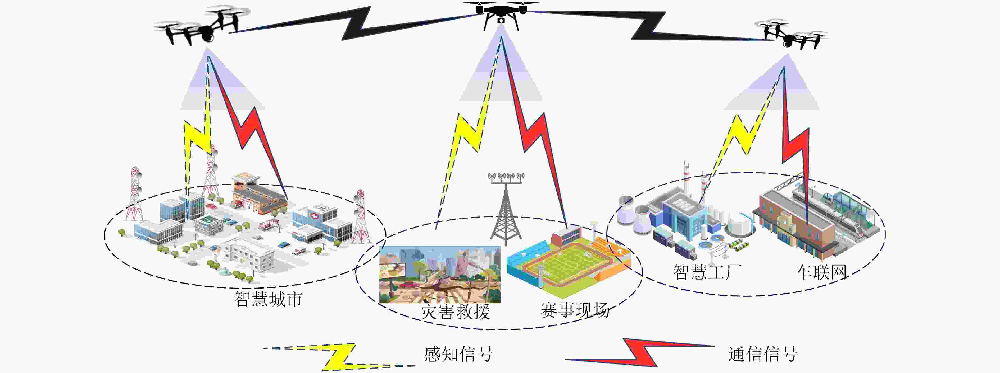

|
Professor, Ph.D. Supervisor
School of Electronic and Information Engineering Beihang University (BUAA) Location: Room F622, New Main Building, Beihang University, Beijing, China
Biography |
Recruitment |
Latest News |
Research |
Publications |
Services |
Awards |
Team |
Alumni
Email: xrwang@buaa.edu.cn [Google Scholar] [IEEE Xplore] [GitHub] [ORCID] |
Biography
王向荣，博士、教授，2009年和2011年分别获南京理工大学电子信息工程系学士和硕士学位，2015年获澳大利亚新南威尔士大学电子工程系工学博士学位，2016年在美国维拉诺瓦大学高级通信研究中心从事博士后工作，2016年10月至今在北京航空航天大学任教。近年来已发表论文百余篇，主持国家自然科学基金民航联合重点项目，科技部重点研发计划课题，国家自然科学青年基金项目，国家自然科学基金面上项目，主持工信部无线电频谱监测项目，主持北京市自然科学基金项目和新星交叉项目，核心人员参与国家自然科学基金重大科研仪器研制项目。IEEE高级会员。2016年入选第二届中国科协“青年人才托举工程”，2018年入选北航拔尖人才计划,2022年北京市科技新星，2022年度国家级人才计划青年项目，2022年度欧盟“地平线”杰出人才计划玛丽居里学者，获2023年度IEEE 航空电子系统协会（AESS）Barry Carlton Award，IEEE 航空电子系统协会 Digtinguished Lecturer(2025-2026)。
招生信息 (Recruitment)
团队采用个性化培养风格，针对每位同学的特点和优点，针对性地制定培养方案，让每位同学成长为最好的自己。有意申请本课题组硕士、博士的同学请直接发邮件至 xrwang@buaa.edu.cn。
Latest News
- [2025.09] 恭喜唐妮娜同学的论文《Airborne Dual-Functional MIMO Radar Communications with Non-Uniform PRI via Cross-Domain Index Modulation》被IET Radar Conference 2025接收！
- [2025.09] 恭喜张昌盛同学的论文《Robust Localization of NLOS Target in L-Shaped Corner Layout Using Single Radar》被IET Radar Conference 2025接收！
- [2025.09] 恭喜程硕同学的论文《Signal-Level Coherent Fusion Processing in Range–Doppler Domain for Distributed MIMO Radar Network》被IET Radar Conference 2025接收！
- [2025.09] 恭喜翟唯童同学的论文《Dual-Functional IRS Design for ISAC via Reinforcement Learning in Unknown Environment》被雷达领域顶刊IEEE TAES接收！[Early access]
- [2025.09] 恭喜张昌盛同学的论文《Robust Multi-target Localization in L-shaped Corner based on a Single Radar》被信号处理领域旗舰会议CAMSAP 2025接收！
- [2025.06] 恭喜团队负责人王向荣教授被聘为《雷达学报》编委！
- [2025.06] 恭喜团队负责人王向荣教授被聘为Associate Editor (AE) for IEEE Aerospace and Electronic Systems Magazine (MAES)！
- [2025.06] 恭喜李畅同学的论文《Robust Capon Beamforming for UAV-Borne Distributed Phased-MIMO Array Radar》被2025 IEEE Radar Conference (RadarConf 2025)接收！
- [2025.06] 恭喜修苌同学的论文《Improved Radar Mid-Air Writing Recognition using Post-Spectrogram Interferometry》被2025 IEEE Radar Conference (RadarConf 2025)接收！
- [2025.06] 恭喜于硕同同学的论文《Spatial Spectral Index Modulation for Wideband Near-Field ISAC with Phased-MIMO Array》被2025 IEEE Radar Conference (RadarConf 2025)接收！
- [2025.06] 恭喜于硕同同学的论文《面向宽带-近场通感一体化的部分连接混合预编码设计》被《雷达学报》网络有限出版！
- [2025.05] 恭喜胡梓萌同学的论文《Sparse Polarization-Sensitive Array Optimization for Enhanced Anti-Jamming Performance》被欧洲信号处理会议（Eusipco 2025）接收！
- [2025.05] 恭喜刘恒峰同学的论文《High-Quality Synthetic Data Generation for Omnidirectional HUman Activity Recognition》提名2025年度IEEE International Radar Conference最佳学生论文奖！
- [2025.03] 恭喜团队在IEEE Signal Processing Magazine上发表通感一体化方向综述论文！[URL]
- [2024.12] 恭喜胡梓萌同学获第十四届“挑战杯”秦创原中国大学生创业计划竞赛“一带一路”国际邀请赛全国总决赛银奖！
Research Interest
-
研究方向一
通感一体化 (ISAC)
通感一体化（Integrated Sensing and Communication, ISAC）通过共享频谱、硬件和算法资源，实现通信与感知功能的深度融合。其核心目标是在同一套系统中同时完成信息传输和环境感知，为自动驾驶、智慧城市以及工业物联网、6G通信等领域提供核心支撑，通过“一网多能”设计，为低空经济提供安全、高效、低成本的技术底座。随着政策支持（如2024年低空经济写入政府工作报告）和技术突破（如5G-A通感基站商用），两者协同将推动无人机物流、智慧城市等场景规模化落地，成为数字经济的新引擎。 -
研究方向二
阵列信号处理 (Array Signal Processing)
阵列信号处理的研究方向聚焦于如何通过多传感器阵列的空间采样与信号协同处理，实现复杂环境下的信号增强、干扰抑制与目标精准定位。其核心方向包括：波束形成技术、空间谱估计与DOA（波达方向）估计、空时自适应处理（STAP）等。这些技术广泛应用于雷达探测、5G通信、声呐定位、医学成像等领域。 -
研究方向三
雷达目标跟踪与识别 (Radar Signal Processing)
雷达目标识别研究方向聚焦于通过雷达回波信号分析目标的物理特性与运动状态，实现复杂环境下目标的精准分类与鉴别。其核心方向包括：微动特征提取（捕捉目标局部振动/转动引起的回波调制，用于区分无人机、手势等运动目标）、多模态信息融合、深度学习驱动（利用CNN、LSTM等网络自动学习时频域特征，突破传统算法对先验知识的依赖）。典型应用涵盖非接触人机界面、人体步态识别、收拾识别、空中写字等。
教育背景 (Education)
- [2011.7-2015.7] University of New South Wales | 信息与通信工程 | 博士研究生毕业 | 博士学位
- [2009.7-2011.7] 南京理工大学 | 信息与通信工程 | 硕士研究生毕业 | 硕士学位
- [2005.9-2009.7] 南京理工大学 | 信息与通信工程 | 大学本科毕业 | 学士学位
工作经历 (Work Experience)
- [2016.10-至今] 北京航空航天大学 | 电子信息工程学院 | 教师
- [2016.2-2016.8] 美国维拉诺瓦大学 | 博士后
- [2015.10-2015.12] 澳大利亚新南威尔士大学 | 博士后
Publications
Selected Journals
[1] Z. Zhai, X. Wang, et al., "Dual-Functional IRS Design for ISAC via Reinforcement Learning in Unknown Environment," IEEE Transactions on Aerospace and Electronic Systems (TAES), early access, Sep. 2025. [IEEE URL]
[2] X. Wang, et al., "Integrated Sensing and Communications: A Mutual Information-Based Perspective," IEEE Signal Processing Magazine, vol. 41, no. 3, pp. 27-38, May 2025. [IEEE URL]
Selected Conferences
[1] C. Zhang, X. Wang, et al., "Robust Multi-target Localization in L-shaped Corner based on a Single Radar," in Proc. IEEE Int. Workshop on Comput. Adv. in Multi-Sensor Adapt. Process. (CAMSAP), 2025.
[2] Z. Hu, X. Wang, et al., "Sparse Polarization-Sensitive Array Optimization for Enhanced Anti-Jamming Performance," in Proc. European Signal Processing Conference (EUSIPCO), 2025.
Patents
- 一种物联网数据收集中的无人机轨迹优化方法及系统, Patent No. 202110635429.8, Publication No. CN113382060B.
Services
Associate Editor
- IEEE Transactions on Radar Systems
- IEEE Aerospace and Electronic Systems Magazine (MAES)
- Elsevier Digital Signal Processing
- 《雷达学报》
Academic Membership
- IEEE Senior Member
- Committee Member of IEEE SAM TC
- Member of IEEE Signal Processing Education Center Editorial Board
- 北京通信学会第十届理事会通信终端专业委员会副主任委员
- 中国指挥与控制学会空间信息通信技术专业委员会委员
Awards
- [2023] IEEE AESS Barry Carlton Award, IEEE Aerospace and Electronic Systems Society
- [2022] 欧盟“地平线”杰出人才计划玛丽居里学者
- [2022] 国家级人才计划青年项目
- [2022] 北京市科技新星
- [2018] 北航拔尖人才计划
- [2016] 第二届中国科协“青年人才托举工程”
团队成员 (Team Members)
团队名称：空管信号处理团队
- 修苌, 程硕, 唐妮娜, 张恒毅, 于硕同, 张昌盛, 刘恒峰, 吴啸宇, 吴焜, 黄嘉怡, 翟唯童, 李畅, 张鑫, 龙倩, 王鹏程, Shahid Hassan, Saima Ishtiaq, 张旋, 徐菁, 马雅楠
Alumni
- [2024] xxxx，工学硕士, 目前就职于xxxxxx.
- [2023] xxxxx, 博士, 目前就职于xxxx.
Association

版权所有 2014-2025 北京航空航天大学
地址：北京市海淀区学院路37号 | 邮编：100191
Last updated on Sep. 22, 2025